Anheurystics' Portfolio
This small website contains links to all the games and prototypes I have worked on.
About Me
I'm a hobbyist game developer, graphics programmer, and web developer.
Games
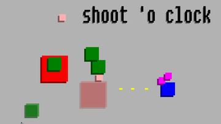
shoot o' clock
An action arcade game (using the terms roughly). Made for Ludum Dare 27, with the theme of "10 seconds".
Links:
GameJolt
Primary Run
A third person puzzle game with the goal of getting everyone to the exit. Made for Global Game Jam 2014.
Links:
Global Game Jam Page
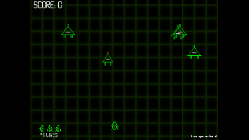
Logic Invaders
A Space Invader clone using the mechanics of logic gates (AND, OR, etc.). Made for a school project.
Links:
Kongregate
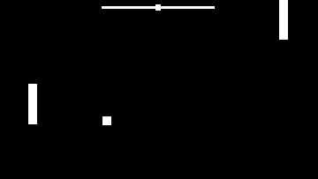
Not Quite Pong
A pong clone, but with Flappy Bird-like controls. Made for FlappyJam 2014, hosted by
@somepx
.
Links:
itch.io
Kongregate
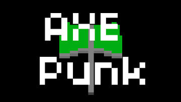
AXE Punk
An action platformer. Made for CyberpunkJam 2014, hosted by
@deviever
.
Links:
itch.io
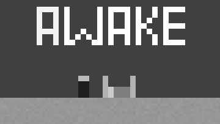
Awake
A short adventure platformer about disillusionment. Made for LowRezJam 2014, hosted by
@deviever
.
Links:
GameJolt
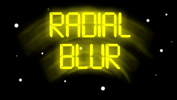
Radial Blur
A wave-based shooter. Made for a local "One Year Game Challenge++" 2013-2014, hosted by IGDA Manila.
Links:
Google Play
itch.io
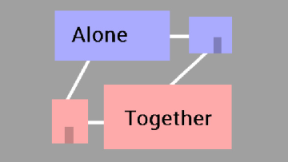
Alone Together
A minimalist puzzle platformer. Made for Ludum Dare 30, with the theme of "Connected Worlds".
Links:
itch.io
GameJolt
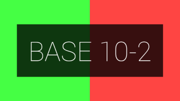
Base 10-2
A time-based arithmetic quiz game. Made for the IndieQuilt Jam, hosted by
@Erichermit
.
Links:
GameJolt
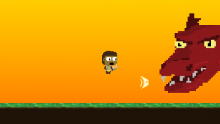
End Game+
A game that deals with the idea of a life after the boss fight. Made for Global Game Jam 2015
Links:
Global Game Jam Page
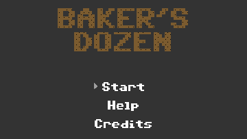
Baker's Dozen
A top down action shooter about shooting cookies at robots. Made for Ludum Dare 32, with the theme of "An Unconventional Weapon".
Links:
Ludum Dare page
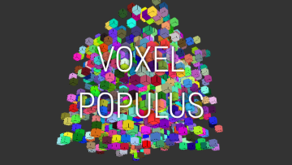
Voxel Populus
A block-building sandbox game made for a local hackathon, YouthHack Code Weekend
Links:
GitHub
Our Dark Lord (is Better than Yours)
A competitive PvP first-person game, in which cults race to summon their demon before everyone else. Made for Global Game Jam 2016.
Links:
Global Game Jam Page